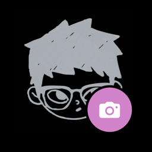

Mirror
A personal smart mirror
Mirror turns a two-way mirror in my home into a quiet display. By default it shows the time, weather, markets, news and fitness stats; from my phone I can switch it to other views.
What it does with Pinterest
One of those views is a slideshow of my own Pinterest boards. With my permission, given through Pinterest's own sign-in screen, Mirror reads my boards and the pins on them and shows the pictures on the mirror, one at a time.
- Read-only. It never creates, edits, saves or deletes boards or pins, and never posts anything.
- Just me. It's a personal project with a single user: me. It isn't offered to anyone else.
- Stays at home. It runs on one computer in my home. Pin data isn't stored elsewhere, shared, sold, or used for advertising.